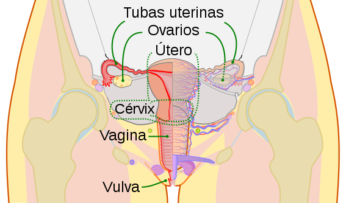
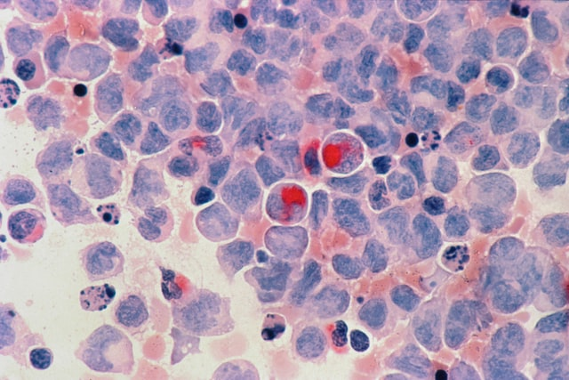

O útero ou um órgão móvel, pode ser fixado por ligamento (amovível) na pélvica mássica. Está localizado acima da bexiga e em frente ao reto feminino. É uma glândula ao longo da vista, cujo pescoço e os orifícios são facilmente olhando através de um dos binóculos ou de um olhar visível.
Seu útero é um órgão importante e significativo para a maioria das mulheres que querem uma gravidez saudável. Seu útero é capaz de sustentar um embrião e promover seu desenvolvimento até os 3 meses do sexto mês. Uma vez que o bebê tenha ultrapassado essa fase do desenvolvimento, ele deve um local onde permanecer enquanto estiver em crescimento natural: o ventre materno.

O câncer cervical é um dos maiores problemas de saúde na América. O papilomavírus humano (HPV) é a causa
de um grande número de cânceres cervicais. O HPV-16 é um tipo de HPV que tem sido relatado como causador
de um grande número de cânceres cervicais.
O cervical é causador da infecção com alguns tipos de HPV que são em sua maioria de câncer sexualmente
humano. A forma de previnir esse tipo de câncer é feito exames preventivos, também chamado de
papanicolau. Se descoberto cedo, tem uma grande chance de ser curado.
site:https://areademulher.r7.com
site:https://capricho.abril.com.br